作者：Darren_Daniel_Day@hotmail.com
本文章主要解答Windows中的python环境问题（也涉及一些常见的Windows下的操作）。在不做特殊说明的情况下，本文中说的操作系统环境是64位 Windows10 家庭中文版。Windows10的其他版本，如企业版、个人专业版中的操作也差不多，都可以参考本文。如果您是Windows7的用户，笔者建议您早日升级到win10，因为微软已经于2020.1.14宣布停止对Windows7的维护。
此外，本文假设您使用python官方的解释器安装程序。如果您使用Jupyter Notebook或者Anaconda等其他带有python解释器的工具，您也可以参考本环境配置教程，但可能会存在一定障碍。
3.8.1官方安装包下载地址：https://www.python.org/downloads/release/python-381/
本文内容较多，但都比较详细。如果您对以下基础概念有一定的了解，您可以适当跳过。如果您对这些概念并不是很清楚，或者是对计算机都比较陌生的初学者，建议您仔细阅读全文。
授之以鱼不如授之以渔。仔细阅读理解本文后，您将能够较好地理解如何配置python环境，并能掌握一定的解决环境问题的知识。
可执行文件是那些可以运行的文件，或者说就是一个程序。他们的文件名通常以.exe结尾。通常您可以在windows资源管理器中找到他们，然后直接双击打开运行。他们的内容往往是机器码，如果尝试用记事本打开，您将会看到一堆无法理解的乱码字符。
批处理文件也像可执行文件那样可以被双击运行，但他们的内容往往是纯文本，能够阅读，并且包含一些批处理命令。他们的文件名通常以.bat结尾。
以下几个名称的区别不大。
终端-Terminal/控制台-Console/命令行-Command Line
本文中将其解释为运行命令提示符或WindowsPowershell时产生的窗口。
即cmd.exe。
命令提示符是一个可执行文件。您可以在开始菜单中搜索cmd找到它。运行它将产生这样一个黑色窗口：
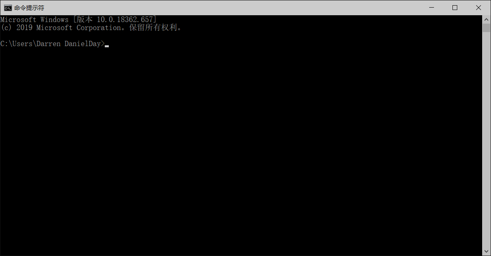
Windows Powershell也是一个可执行文件。您可以在开始菜单搜索powershell找到它。运行它将产生这样一个蓝色窗口：
就基本功能而言，powershell和cmd差不多，但是用powershell可以执行linux下的命令，而cmd只能执行windows下的命令。
有关DOS命令的概念，您可以参考百度百科：https://baike.baidu.com/item/DOS%E5%91%BD%E4%BB%A4
在这里笔者简单介绍一下DOS命令里的一些概念。
本文中的指令是指一条完整的、可以被命令提示符执行的文本。您可以在命令提示符中输入以下内容，并按下回车键执行。
echo hello这条指令简单地输出一个hello。
例如安装requests库的指令：
pip install requests -i https://pypi.tuna.tsinghua.edu.cn/simple/其中pip就是命令。
您可以暂时先不去管上述的指令的含义，因为这在后文有介绍。
通常，命令有三种：内部或外部命令、可执行文件、批处理文件。 对于后两者，.exe和.bat可以省略不写。后文将会介绍如何使用命令。
在大多数时候，我们也将命令和指令和命令行混为一谈，例如执行一个[命令]行这种说法，其实指的是执行一个[指令]，或执行一个完整的[命令]语句。您可以根据上下文自行辨识。
例如上文指令中的install、requests、-i、https://pypi.tuna.tsinghua.edu.cn/simple/就是pip命令的四个参数。
本文中的选项指的是一种特殊的参数。他们往往以-开头。
例如上文中的-i就是一个选项。
选项可能和其他参数结合，形成特殊含义。例如上文的-i选项就是指定临时镜像源，并指定镜像地址为https://pypi.tuna.tsinghua.edu.cn/simple/。
pip --version环境变量的主要作用是存储DOS命令经常需要用到的路径。当您需要指定一个路径时，您可以通过这些变量的值来指定。这样，您就不需要每次执行指令都手打完整路径了。
您可以在指令中使用%变量名%来引用他们的值。例如下面的指令能输出您的用户文件夹路径：
echo %USER%环境变量Path是一个特殊的环境变量。它主要用于解析可执行文件和批处理文件的位置。您可以在开始菜单中搜索[环境变量]找到设置他们的地方，像这样：
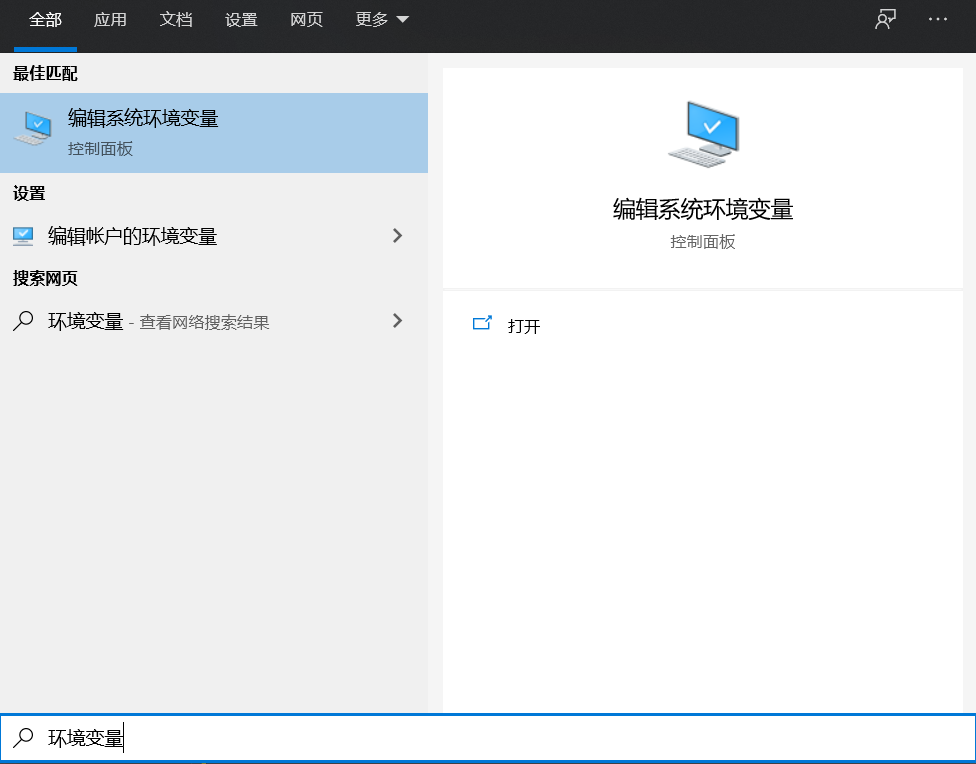
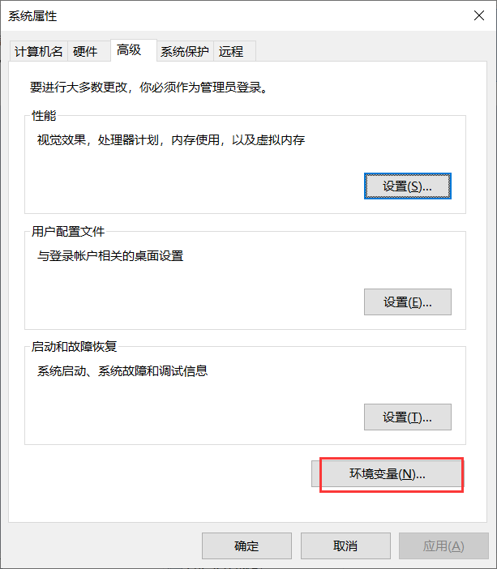

值得注意的是这里有两种Path环境变量，一种是用户变量，一种是系统变量。一般而言您只需要修改用户变量。
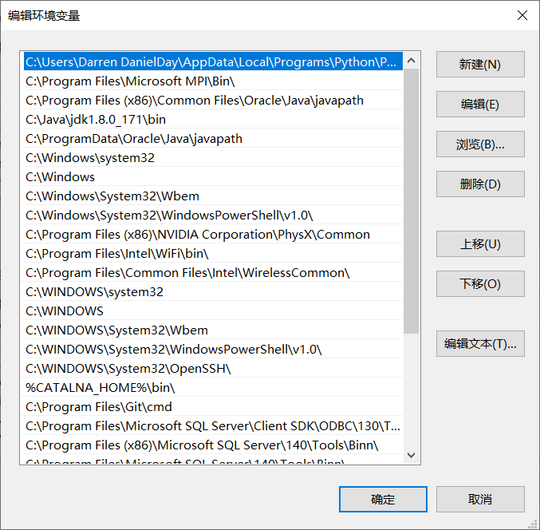
可以看到，这里展示的是一张表。如果您使用Windows7，那么这张表将会以一个用分号;分隔的纯文本展示。Win10下通过编辑文本按钮也可以看到这些文本。
Path的主要作用就是告诉命令行：这些文件夹是经常要用的，请在解析命令的时候在这些文件夹里搜索[可执行文件]和[批处理文件]。
因此，将python的安装位置文件夹加到Path将使得命令行能够解析里面的python.exe，或者简写的python。可见上图中笔者已经将python安装目录加入Path环境变量（可以在安装的时候勾选Add Python to Path，让安装程序自动帮您设置，如果忘记勾选可以手动添加）。
如果要添加一个Path中的路径，可以点击新建按钮，然后输入值。配置python需要两个路径，一个是python.exe所在文件夹，一个是该文件夹下的Script文件夹。
如果您在安装python解释器时是默认的安装位置，那它将在
C:\Users\您的Windows登录用户名\AppData\Local\Programs\Python\Python版本号下图简单演示了如何在命令行检查Path环境变量是否配置正确。如果在命令行中输入命令python能够进入python解释器的交互模式，则您已经成功配置好Path环境变量！
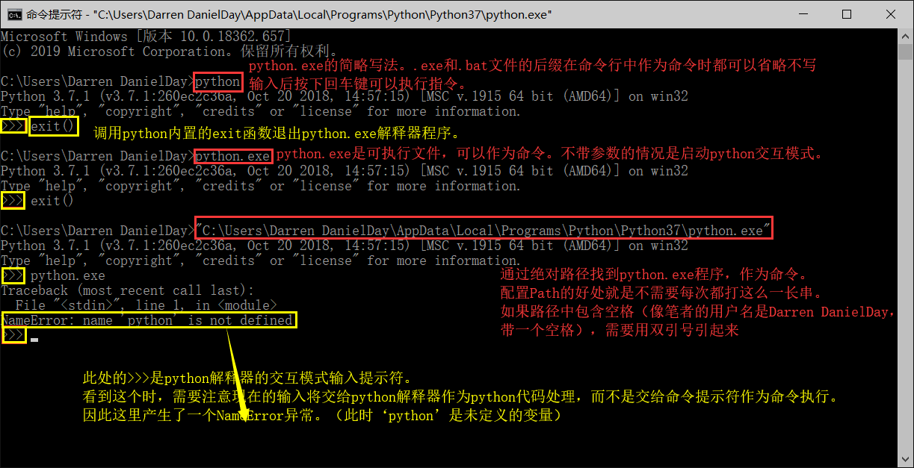
python解释器主要指python.exe。
python是解释型语言，其代码通过解释器解释后再运行。目前最流行的解释器是使用C语言实现的解释器。如果您是通过python官方的安装程序安装python解释器（是用C语言实现的解释器），那么，您可以在python安装目录下的include文件夹中找到相关的C语言的头文件（.h文件）。
但python.exe只是一个主程序，单独的python.exe并不能完成整个python解释器的工作，它还需要其他链接库文件才能工作。因此，python.exe就像一个解释器启动器一样。
python解释器的主要作用是解释并运行python代码。
前文的图片中已经简单地介绍了一下交互模式的启动方式。在交互模式中，您将会经常看到>>>和...。他们都是交互模式的输入提示符，只不过>>>用于表示当前位置是语句的开始，...表示当前行是拆行书写的同一语句或者若干子句。
python来进入交互模式。大致效果如下图。
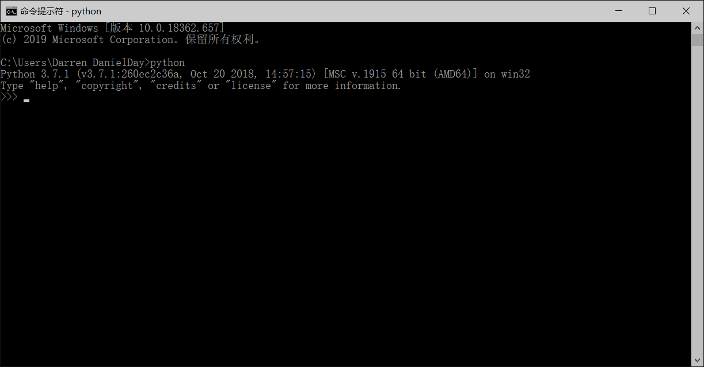
您也可以直接在开始菜单搜索并运行python解释器程序进入交互模式。大致效果如下图。
 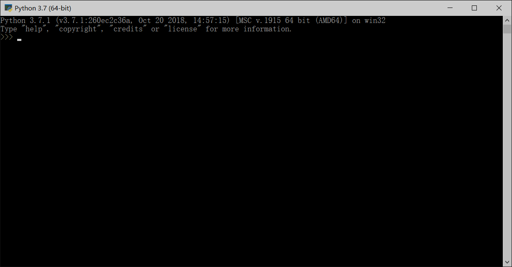
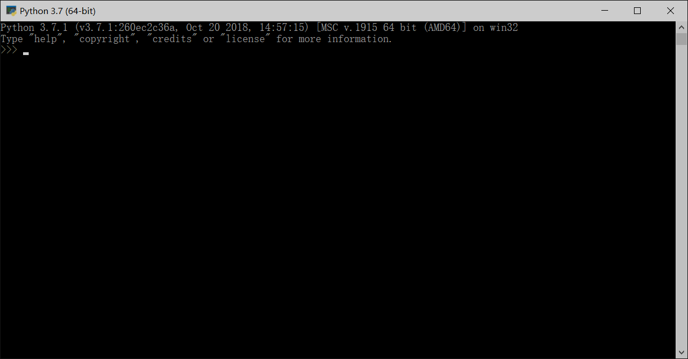
学习任何一门编程语言总是离不开那么一个Hello World程序，这一点对于python也是一样的。
python的Hello World代码很简单：
print('Hello, world!')您可以在交互模式下输入以上代码，并按下回车键。您将看到一句Hello, world!的输出。
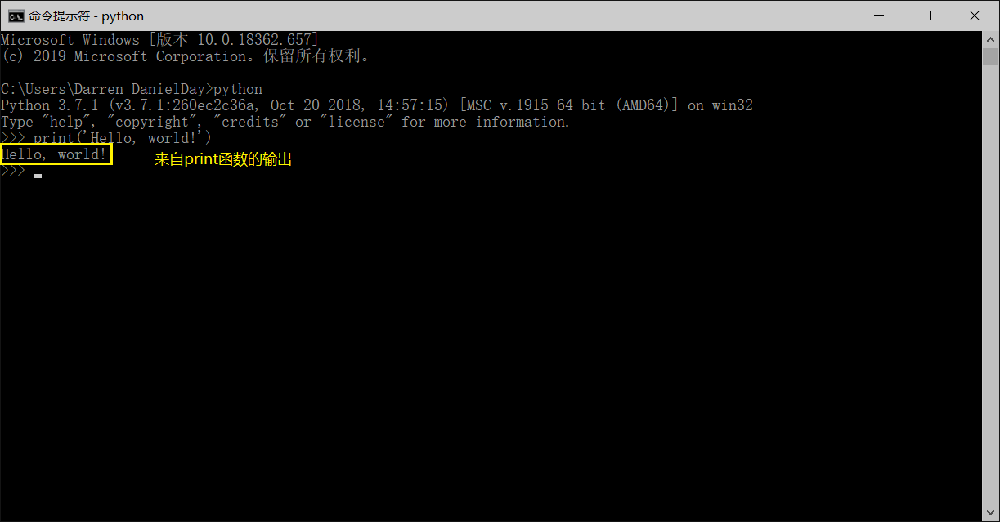
您可能还有些疑问，比如print函数是什么，'Hello, world'是什么，括号有什么含义，为什么会有输出。在本文中，这些并不是很重要，因为这是python的语言知识。而到此为止，您已经完成了您的第一个python程序！
如果每次运行python代码都要这样手打一遍，您一定会觉得麻烦。因此，您可以将这些代码写成脚本文件，并运行他们。下面将简单演示如何写脚本文件并运行他们。
在Windows资源管理器中选择一个您喜欢的个人文件夹（或者新建一个文件夹），以便于管理您的python脚本。此处笔者的示例中在C盘新建了一个python_coding文件夹。
接下来您可以在您的个人文件夹中创建一个文本文件，将其命名为helloworld.txt。如果您看不到文件的扩展名（.txt后缀），可以通过查看->勾选文件扩展名来显示他们。
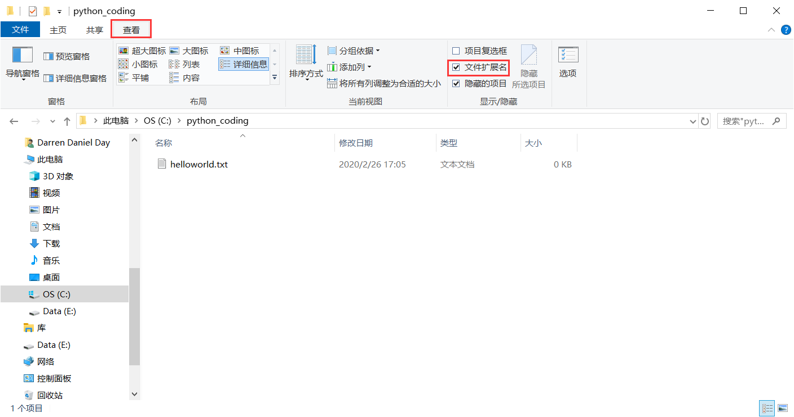
接下来您可以用记事本打开它，并在里面写入Hello World程序的代码：
print('Hello, world!')并将其保存。接下来您可以在这个文件夹的地址栏输入cmd并按下回车键（注意需要覆盖掉全部地址）。您将看到被打开的命令提示符，并且当前路径为您的个人文件夹。


python helloworld.txt您将大概看到这样的结果：

至此，您已经成功地在命令提示符运行了Hello World程序的python脚本！
不过在习惯上，我们总是将python脚本命名成.py后缀。您可以将helloworld.txt的文件名修改成helloworld.py，然后执行命令
python helloworld.py其效果是一样的，因为python脚本文件其实就是纯文本。
请注意，如果不进行
.py后缀命名，将导致该脚本无法被python的import语句正常导入。您现在也许不必关心import语句是什么，但您应当明白命名成.py后缀是更好的。
在下面的例子中，脚本已经被笔者重命名成.py后缀。
如果您通过开始菜单打开命令提示符，您可以使用绝对路径找到您的脚本文件，并运行。
python C:\python_coding\helloworld.py您将看到以下结果。

您也可以使用下面的指令来改变当前路径为您的个人文件夹。
cd C:\python_codingcd是change directory的英文缩写，其作用是跳转终端的当前路径。其参数可以是绝对路径，也可以是相对路径。此处使用了绝对路径。
然后您将可以使用指令
python helloworld.py来运行您的脚本。图略。
对于初学者，笔者建议多使用交互模式。使用交互模式的好处是您可以和解释器频繁交互，及时得到python解释器的反馈，并且产生的异常不会终止解释器程序。因此使用交互模式来探索python是最快的，即使您在学习过程中会有许多磕磕绊绊。当您对python基础知识的熟悉程度达到一定水平的时候，您可以通过写脚本来构建更大的程序和系统。
如果您将python解释器和.py文件进行了关联，您将可以通过直接双击.py文件运行他们。文件关联可以理解为文件的默认打开方式，而这个打开方式就是一个可执行文件。
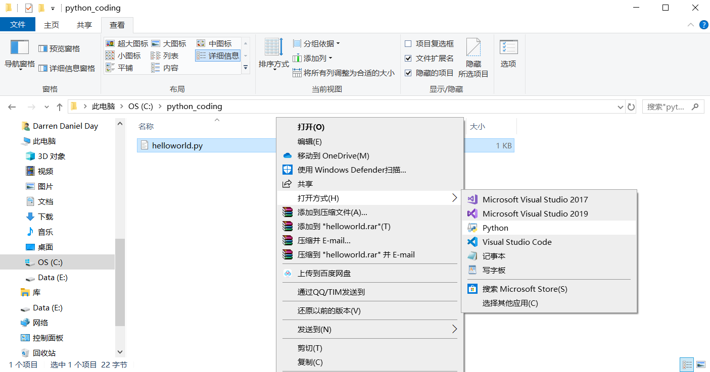
笔者没有进行python解释器和.py文件的关联（笔者将Visual Studio Code和.py文件进行了关联），因此通过在打开方式中选择python解释器来打开它。
但是您可能看到一个窗口一闪而过，然后就消失了。这是因为python解释器执行完脚本就退出了，其控制台窗口也自然被关闭。
如果您想要看到窗口中的输出内容，您可以选择在命令提示符中执行您的脚本,而不是通过文件关联的双击运行，或者您也可以在代码中增加具有阻塞性质的内容。对于后者，您可以使用input函数等待输入来进行阻塞，也可以使用os模块的system函数执行一个pause命令。下面是改写后的两个脚本内容：
print('Hello, world!')
input('输入任何按下回车键关闭......')import os
print('Hello, world!')
os.system('pause')python的最大优点就是第三方库丰富易用。因此，学会安装和配置第三方库也很重要。而安装第三方库最主要的工具就是pip。
pip的主体也是个可执行文件（pip.exe）。如果您在安装python解释器时勾选了pip，您可以在python的安装目录下的Scripts文件夹中找到它。

如果您没有安装pip，您可以重新安装python解释器并勾选pip。或者您可以参考这里:https://pip.pypa.io/en/stable/installing/。网页是英文的，如果您有阅读障碍，请使用翻译。
您可以通过指令
pip --version来检查您是否正确配置了使用pip需要的Path 环境变量。如果您看到了您的pip版本，则说明您已经成功配置环境变量。如果没有，您需要手动配置Path环境变量。如果您认真阅读并理解了前文的配置Path相关内容，您应当有能力自行配置。
首先，您需要知道您要安装的第三方库的名称。此处以比较常用的网络请求库requests为例。
您可以在pip的官网：https://pypi.org/搜索您要安装的第三方库。
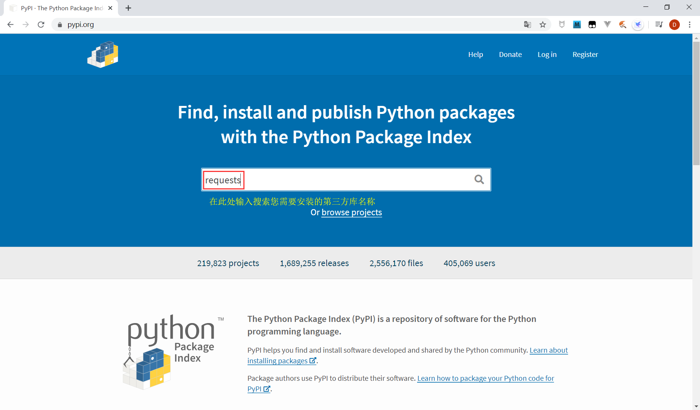
 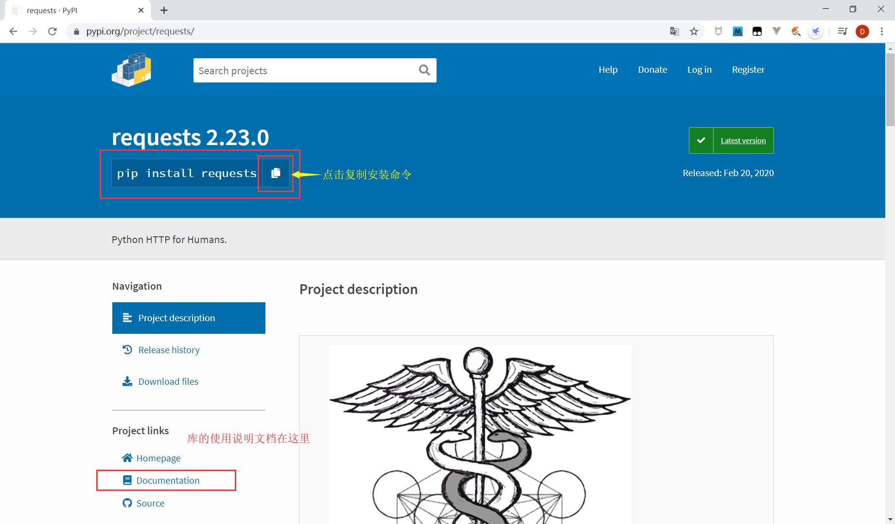
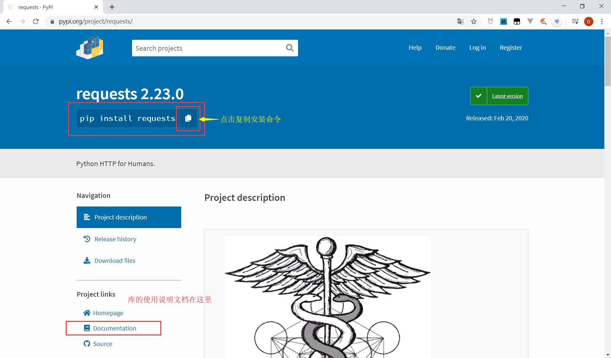
值得一提的是，您可以在pypi找到第三方库的使用文档，这非常重要。看10个国人做的快速入门教程不如好好读一遍库原作者的文档。
找到安装指令后，您可以在命令提示符执行它。当然，由于笔者已经安装了requests库，所以看到的是一堆Requirement already satisfied（安装需求已经满足）。

您可以使用指令
pip --help来查看pip的用法。
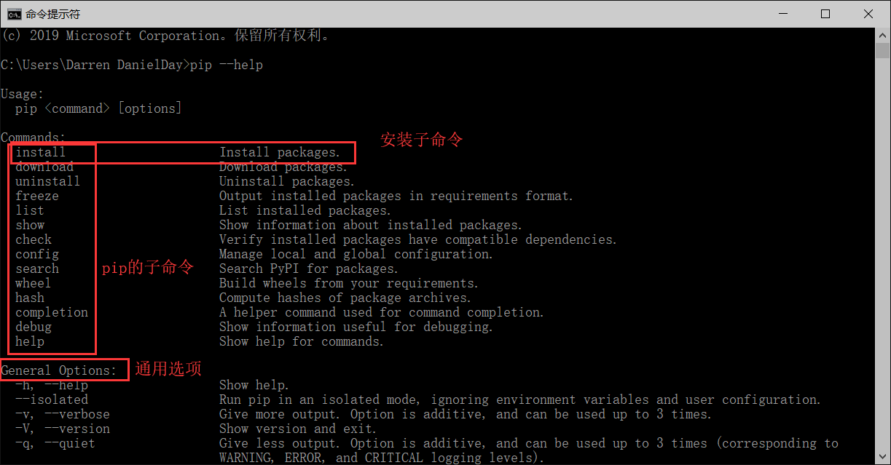
在张表里，install是命令pip的一个可用参数，不过在指令执行的时候被解释成一个子命令。
如果您想进一步知道子命令install的用法，您可以使用指令
pip install --help来查看。
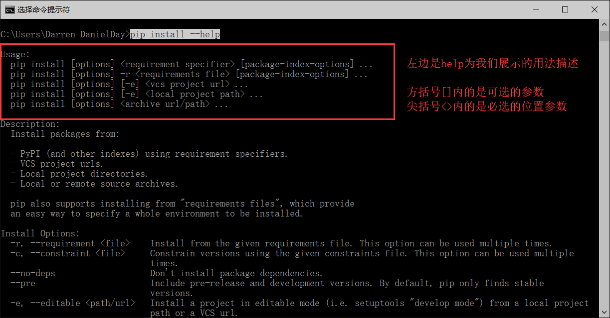
您可能认为笔者应当直接教学如何使用pip，而不是展示如何阅读这些帮助。但笔者认为，学会阅读这些对您解决问题的水平提升会带来很大帮助。
根据上图的第一个用法，我们可以得出最简单的用法：
pip install <requirement specifier>即方括号内的可选参数都不给，只给一个requirement specifier，“需求描述符”（即库的名字）。
前文运行过的pip install requests正是这种用法。
如果您在安装过程中产生了网络超时错误，您应当考虑使用代理（翻墙）或者使用国内镜像。
您可以在install的help中找到使用镜像的方法。

您可以使用以下的国内镜像地址：
笔者一般使用的是清华大学的镜像。
如果您根据上文已经理解了pip的install子命令的用法，您不难得出使用清华大学镜像安装requests库的指令是
pip install requests -i https://pypi.tuna.tsinghua.edu.cn/simple/或者
pip install requests --index-url https://pypi.tuna.tsinghua.edu.cn/simple/如果您希望修改默认的安装地址为国内镜像，您可以参考这篇文章：https://blog.csdn.net/sinat_21591675/article/details/82770360
现在您应当已经具备运行编写脚本代码和运行代码、安装第三方库的能力。但用记事本编写代码实在是令人无法接受，因为黑白界面不太好看，并且当代码量大起来以后，您将无法很好地阅读您的代码。
因此，您需要一个代码编辑器来简化一些操作，并提供更好的代码渲染视图。一个好的代码编辑器能助您事半功倍！
您可以根据个人喜好选择代码编辑器。如果您是编程的初学者，笔者建议您使用Visual Studio Code。
下面笔者将介绍三款能写python的代码编辑器的简单使用和环境配置相关事宜。
IDLE是python解释器自带的，也是官方推荐的初学者编辑器。最直白的缺点是界面并不是很好看（但比记事本好看点）。
如果您按照默认安装了IDLE，您可以在开始菜单中搜索IDLE并找到它。
打开后，您将大概看到这样的界面：

您可以看到熟悉的>>>。这表示您正在python交互模式当中。笔者将简单地键入几行python代码（当然最后的一行?是不合法的python代码），您大概会体会到IDLE的python交互模式和在命令提示符中的区别——代码的颜色不一样。这种对代码的颜色渲染有助于您更好地阅读代码。
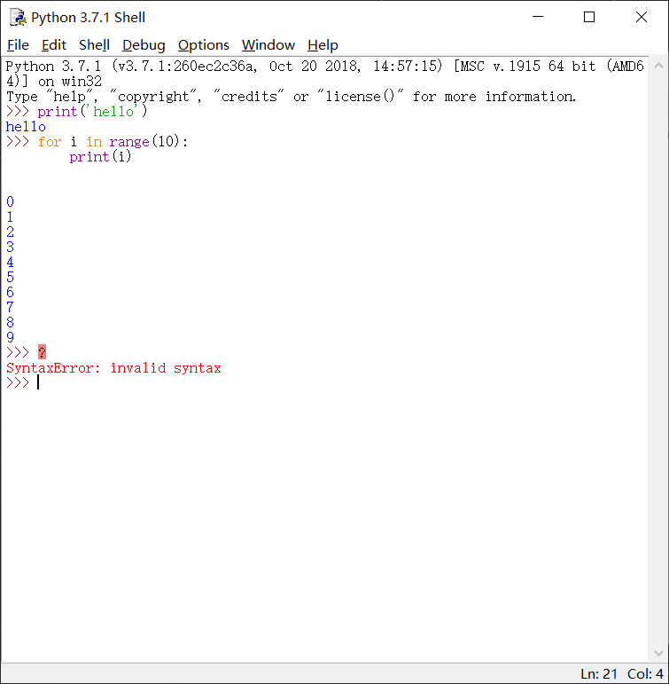
您可以通过点击菜单栏的File->New File来创建一个新的脚本文件。这将打开一个新的IDLE窗口。
当您创建脚本后，您将可以书写您的脚本代码，像在记事本中那样，只不过代码将被不同颜色渲染，可读性有所提升。
笔者写入了这样的代码：
print('Hello, world')
name = 'Darren'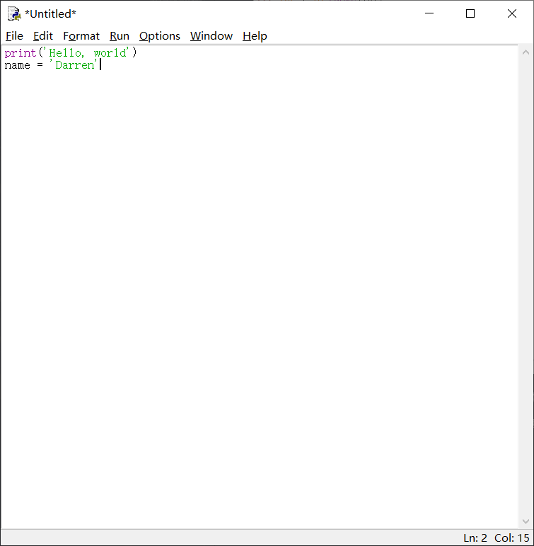
接下来您可以点击菜单中的Run->Run Module(F5)或者按下F5键来运行您的脚本。不过在那之前，您可能需要先选择一个位置保存您的脚本，IDLE会弹出这样的提示：
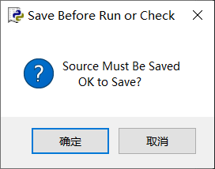
您只需简单确定并选择您的个人文件夹，并命名您的脚本。此处笔者选择了C:\python_coding文件夹，并将脚本命名为idle_demo。不必担心后缀名，IDLE将自动为您命名后缀为.py。

保存并运行后，您将看到print函数输出的结果：
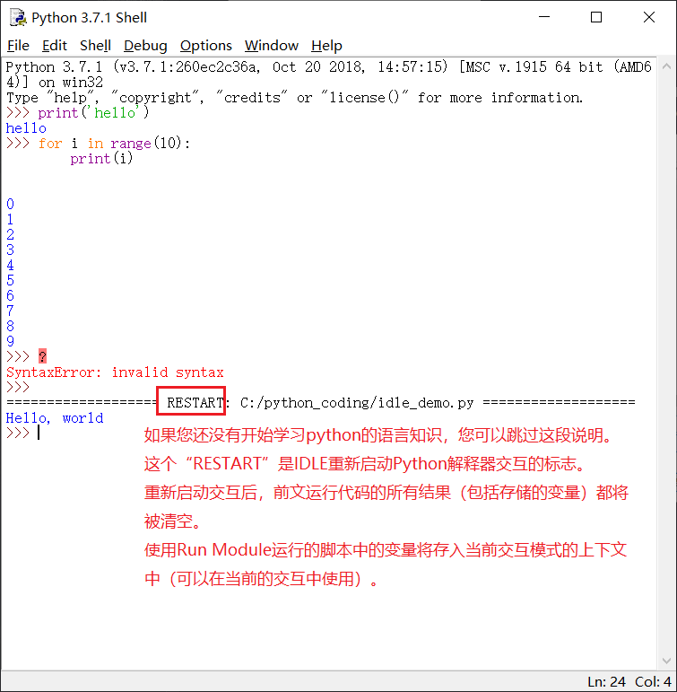
更进一步地，您也可以在python交互中使用刚才脚本中定义过的name变量，并带有代码提示（您可以输入一个n，并按一下Tab键，这将弹出如下图1的下拉菜单，此时选择第一个并按Tab键一次和回车键一次或两下Tab键将可以补全输入，帮您键入整个name），但Run Module运行脚本前的交互中由for循环定义的变量i将变成未定义的。


以上是简单的IDLE中的操作。如果您有兴趣，可以自行探索其他功能（例如格式化代码、调试、有趣的Turtle图形化库的官方示例代码等）。
Visual Studio Code（简称vscode）是微软开发的一款轻量的代码编辑器。她不是像Sublime Text那样的纯文本编辑，也不是像Visual Studio那样的大型集成开发环境，这一点使得大多数的开发者选择了她。更酷的是，她完全开源免费。您可以在GitHub上找到她的源码：https://github.com/microsoft/vscode。
您可以通过这个链接下载她：https://code.visualstudio.com/Download。
Visual Studio Code使用微软开发的语言Typescript编写，其核心是
Chromium（类似浏览器的内核）和Electron。vscode虽然本体功能不多，但其插件社区很大，丰富的插件使得vscode变得强大。
安装程序是中文的，您不必担心有太大的障碍。如果您不想做太多选择，您可以直接一路Next安装。安装完毕后，您可以启动她。对于写python脚本的需求，您需要两个插件。
您可以在插件商店搜索这两个名字，并安装。大致步骤如下图。
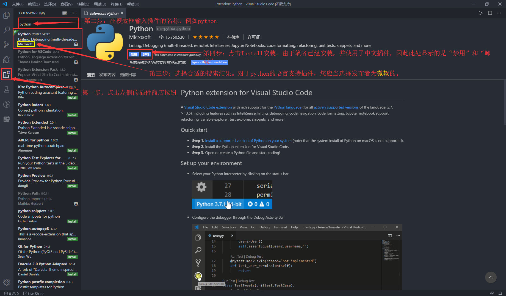
您的vscode外观颜色可能和笔者有所不同，因为笔者还安装了主题插件。您也可以根据个人喜好安装主题插件。笔者使用的主题插件是
One Monokai Theme，配色相比默认深色主题更加柔和。
接下来，您可以打开一个文件夹，作为vscode的工作目录。笔者选择了前文的C:\python_coding文件夹。
vscode可以使用文件夹作为工作目录，也可以打开工作区（需要工作区配置文件），也可以不打开而进行单纯的单文件代码编辑。笔者推荐使用
打开文件夹作为工作目录，以方便脚本文件的管理。

下面是简单的界面介绍：

您可能注意到了背景图片
津岛善子 下界の儀式。背景图片效果来自于插件vscode-background，如果您需要，您可以自行安装配置。
接下来几张图简单介绍如何在vscode中调试运行您的python脚本。
 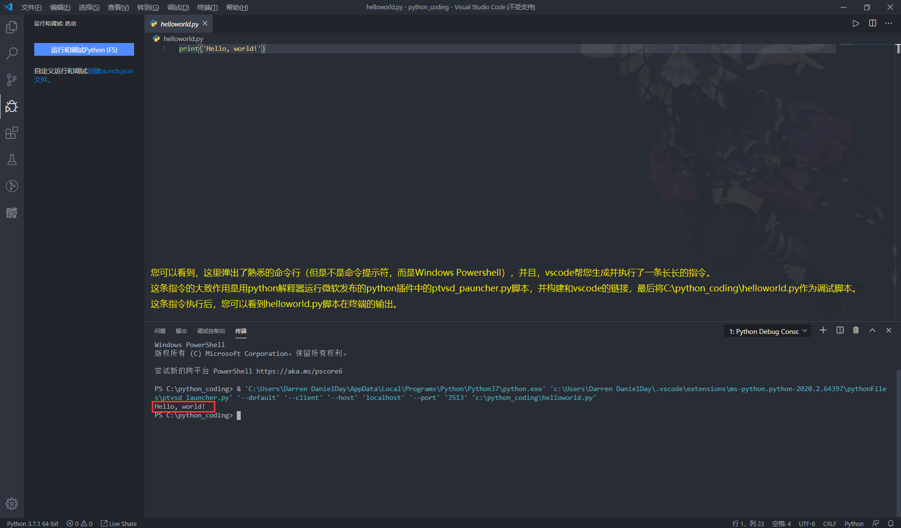
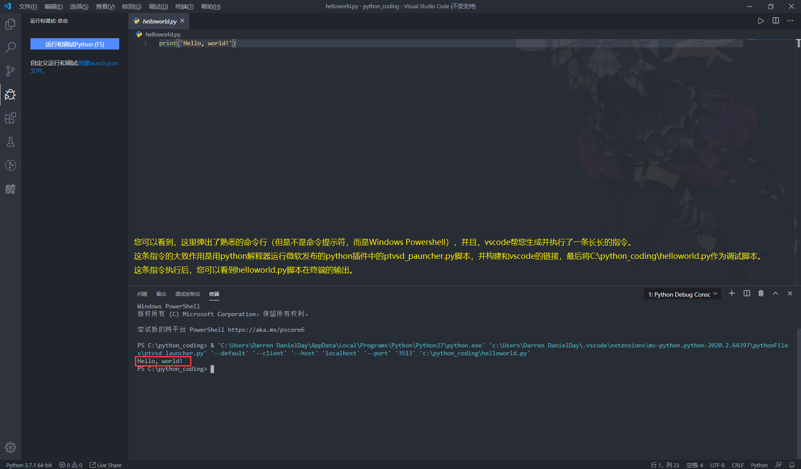
如果您发现频繁选择第一个Python File选项比较麻烦，您可以按照如下步骤添加配置文件。
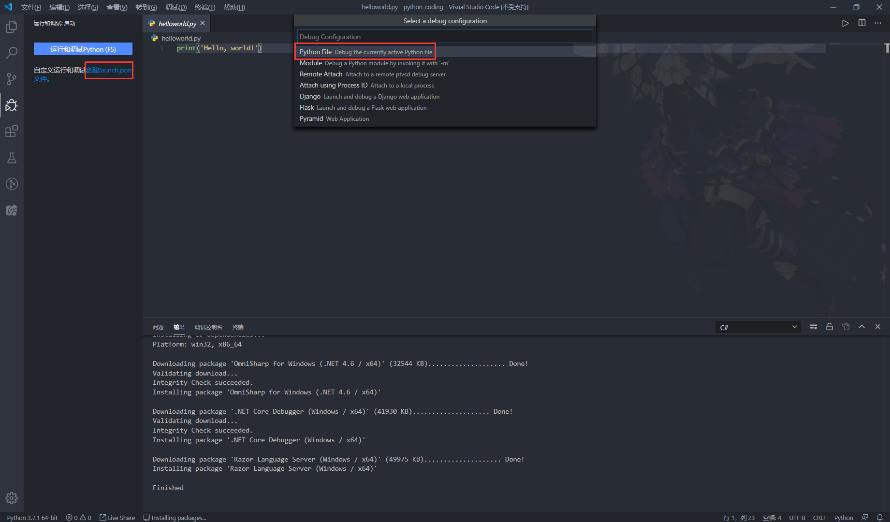

如果您认为这样的操作过于麻烦，您也可以安装code-runner插件，一键运行您的脚本。安装后，您将在右上角看到一个空心的小三角形图标。您可以使用它直接运行您当前选中的脚本。
接下来几张图将简单介绍使用vscode调试代码（Debug）的方法。
笔者将使用这样的python代码进行调试示例：
a = "global variable a"
def function_1(a):
print(a)
def function_2():
function_1("another var")
if __name__ == "__main__":
function_2()

接下来按F5
 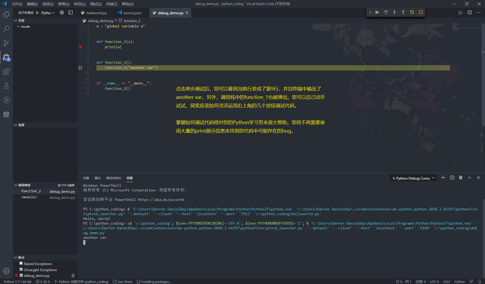
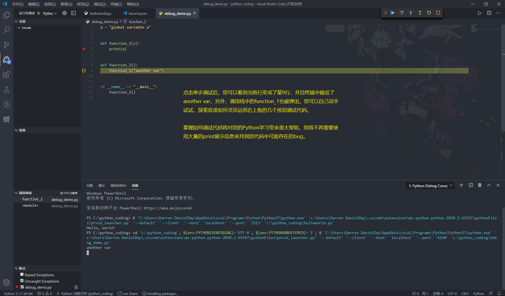
您也许会想到：不打断点的调试，其实就和直接运行差不多。确实如此。但是调试需要建立和vscode的连接，因此会比直接运行慢一点。您可以在终端中执行指令运行您的脚本，也可以借助code-runner插件，来直接运行您的脚本。
以上是对vscode写python的简单介绍，您可以自行探索其他功能，例如代码补全、代码格式化、快捷代码重构操作、文本搜索等。vscode还支持许多其他语言，例如主流的Java、C/C++、Javascript、HTML、C#等等。您只需安装相应的语言支持插件，就能够在vscode中编写他们！
Pycharm是Jet Brains公司开发的一款python的IDE（集成开发环境）。它功能比较多，也比较专业，但同时也比较笨重、复杂，不适合编程的初学者。如果您正在使用的教程/课程使用的是Pycharm，您可以参考本文进行配置。
Pycharm有社区版（Community）和专业版（Professional），其中社区版是免费的，而专业版是收费的。专业版的功能比社区版的相对多一些。您可以在这里下载它：https://www.jetbrains.com/pycharm/download/#section=windows。
如果您选择了专业版，您将需要激活，或者免费试用一段时间。如果您是学生，您可以使用学生认证进行激活，并免费使用Pycharm到您毕业为止，可以参考这篇文章：https://blog.csdn.net/qq_36667170/article/details/79905198。如果您不是学生，又希望使用专业版，请考虑购买许可。如果您尝试使用破解版，并对Jet Brains公司造成了损失而被追究责任，笔者概不负责。
本教程将演示如何使用社区版。
安装选项您可以根据个人需要进行变更。安装完毕后打开，您将看到这样的界面：
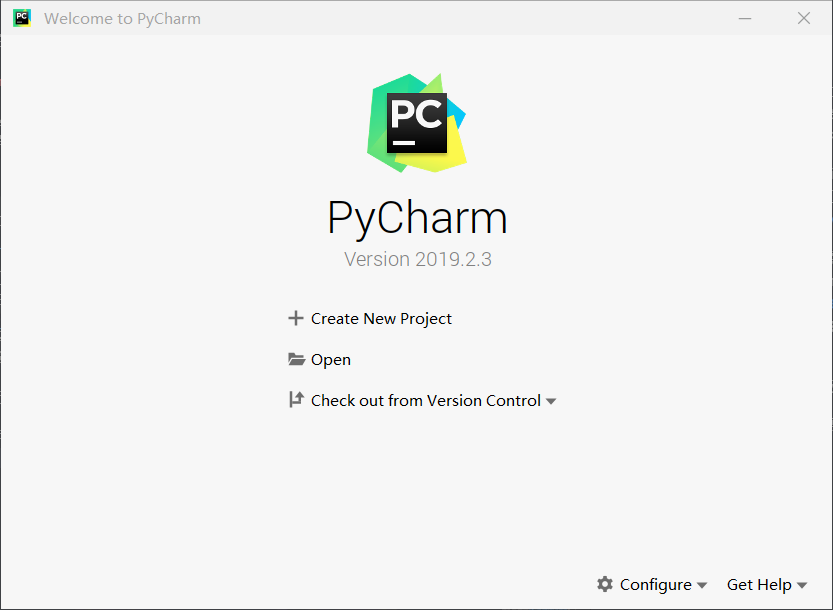
您可以选择第二个选项，打开一个文件夹，这和vscode有些相似。您也可以选择第一个选项新建一个项目。在这里，笔者将展示创建项目。
 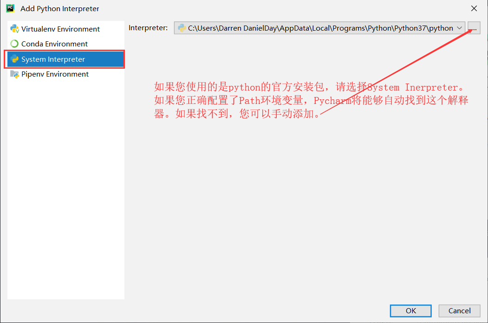
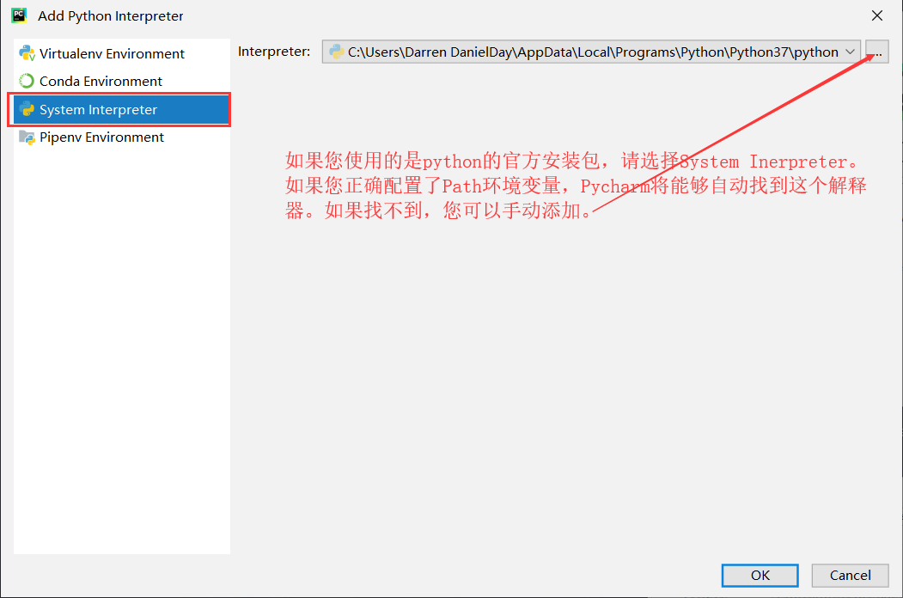
选好解释器后点击create。进入后您将大致看到这样的界面。
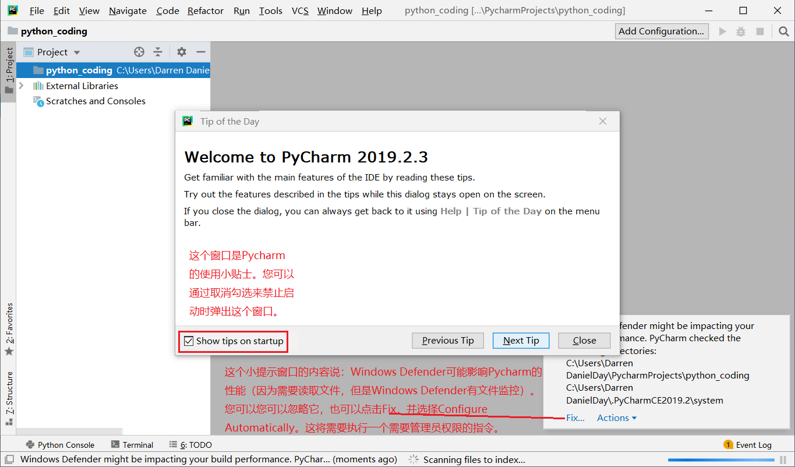
您可以在项目中新建一个脚本文件。笔者在此使用的脚本代码和vscode中的示例一样。


如果您在创建项目的时候选择了虚拟环境（如果您没有看上述教程，而是按照默认创建了项目，则会有一个虚拟环境），您可以在设置中修改项目的解释器：


您可以通过两种主要的方式运行您的脚本：
要运行当前脚本，您可以右键单击脚本的空白处，然后选择Run。
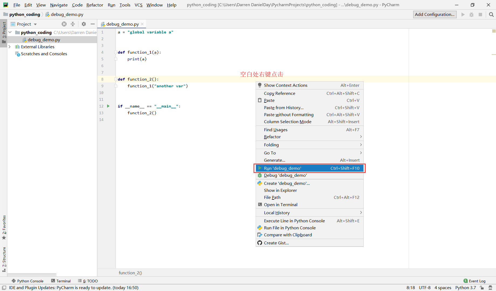
您将看到这样的结果：

通过以上方法运行过一次以后，pycharm将会为您生成一个运行配置。您可以使用这个配置，点击左上角的绿色小三角形运行。
下面笔者将介绍如何手动配置运行配置。
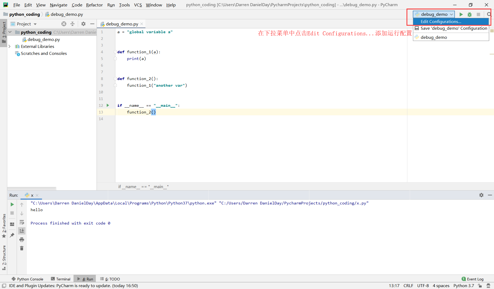 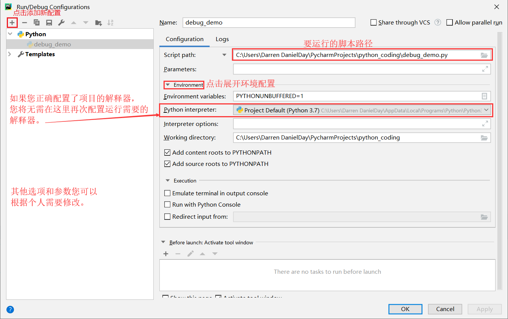
配置完毕后，您可以选择需要的配置，然后点击右上角的绿色小三角形运行。
Pycharm的调试功能，笔者也用一张图简单概括，仅介绍界面。有关调试的一些概念详见vscode的调试部分。
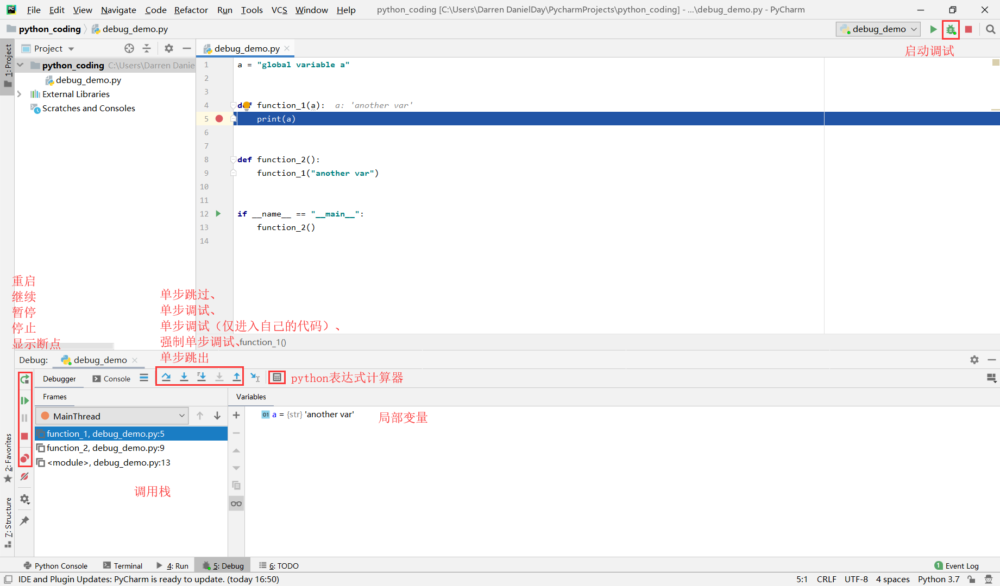
至此，您已经阅读完本文的内容。
Enjoy!